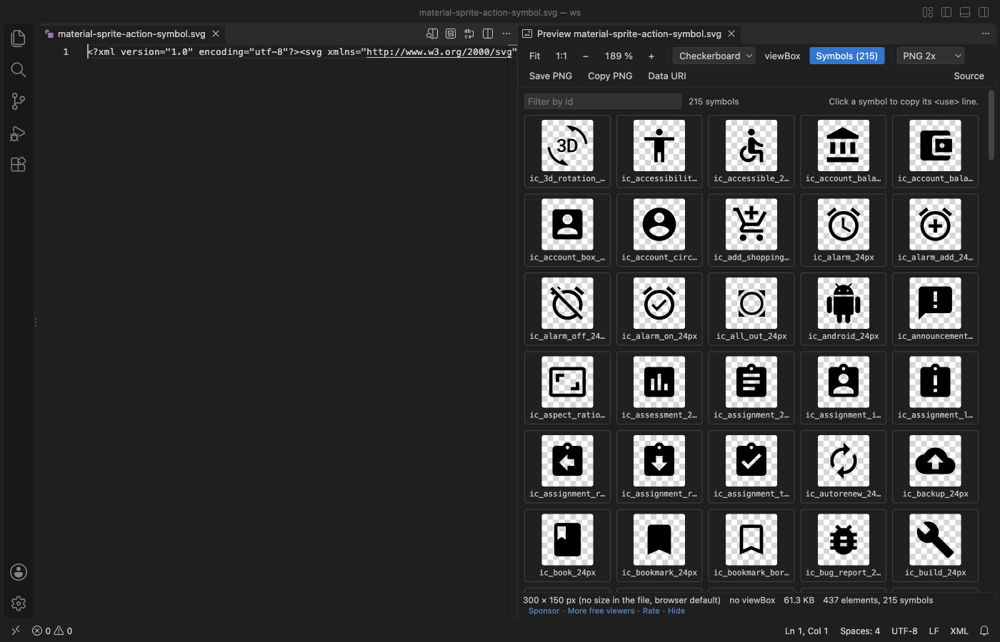

Open files in VS Code and Cursor / Developer files
See every icon in an SVG sprite sheet
An icon sprite is one SVG file with hundreds of <symbol> elements, and the text does not show which icons it holds. In SVG Preview & SVG Viewer, a file with symbols gets a Symbols button that shows a grid of every icon with its id. Type in the filter to find one, and click a tile to copy its <use href="#id"/> line. Viewing is free. Zovo Pro (USD 19 once) adds Build SVG Sprite from Folder, which makes a sprite from a folder of icons, with 3 free tries.
Free, MIT license. Extension ID zovo.zovo-svg-viewer, version 0.2.1. Needs VS Code 1.90.0 or newer.
Also free from Zovo: Mermaid Diagram Editor & Viewer, VS Code Marketplace · Open VSX (Cursor, Windsurf).

Steps in VS Code
- Install SVG Viewer from the Marketplace, or press Ctrl+P (Cmd+P on macOS) and run
ext install zovo.zovo-svg-viewer. - Open the sprite
.svgand click the preview button in the editor title, or press Ctrl+K V (Cmd+K V on a Mac). To see the preview without the text, right-click the file and pick "Open in SVG Viewer". - Click Symbols in the toolbar. A file that holds only symbols, with no size and no viewBox of its own, opens on the grid by itself.
- Read the count, such as "215 symbols". Each tile draws one symbol with its id under it. Hover a tile to see its
<use>line and viewBox. - Type part of an id in the "Filter by id" box, such as
alarm, to find an icon. - Click a tile to copy
<use href="#id"/>, then paste it inside an<svg>element in your page.
Where Zovo Pro saves time
The sprite grid, the filter, copying the <use> line, the preview, zoom, PNG export and Data URI are free. Gradients and styles that the sprite shares are applied to the tiles, and scripts in the file never run.
Making a sprite by hand means copying each icon into a <symbol> and renaming ids so gradients and clip paths do not clash. Build SVG Sprite from Folder joins every SVG in a folder and its subfolders into one sprite.svg. Each symbol is named after its file, and inner ids are renamed. It then offers the <use> snippet for the first icon. The other Pro tools are Optimize SVG and Convert SVG to React Component.
With Build SVG Sprite from Folder (Zovo Pro)
- Right-click a folder of icons in the Explorer and pick "Zovo Pro: SVG sprite from a folder", or run "SVG Viewer: Build SVG Sprite from Folder (Pro)" from the Command Palette.
- Pick where to save
sprite.svg. A try counts only when the file is saved. - Open the new sprite in SVG Viewer and click Symbols to check every icon.
Build SVG Sprite from Folder works 3 times on your computer before it asks for a license, and a try counts only when you get a result. Opening a file shows no popup and no countdown.
Zovo Pro costs USD 19 once. It is not a subscription, and it turns on the Pro tools in every Zovo extension, not only SVG Viewer. After a card payment (Stripe) your license key shows on the next page. In VS Code, run "Zovo Pro: Enter Zovo Pro license key" from the Command Palette and paste it. The key is checked on your computer, with no network call. With GitHub Sponsors, pick the "$19 one time" tier, then run "Zovo Pro: I already paid: unlock with GitHub Sponsors" and sign in with the same GitHub account. With PayPal, send USD 19 with "Zovo Pro" in the note and the key comes by email within a day.
A team of 5: USD 59 once, by card or by PayPal. Every rule and every Pro tool is on the Zovo Pro page.
Steps in Cursor, Windsurf or VSCodium
- Open the Extensions view with Ctrl+Shift+X (Cmd+Shift+X on macOS).
- Search for
zovo.zovo-svg-viewerand click Install. Cursor, Windsurf and VSCodium install from Open VSX, where it is published aszovo/zovo-svg-viewer. - If your editor has no gallery, download the .vsix from the Open VSX page and run "Extensions: Install from VSIX...".
- Then use it the same way as in VS Code.
What SVG Viewer handles
- Sprites made of
<symbol>elements, with or without their own viewBox. .svgzfiles.- Sprites with shared
<defs>and<style>. - Large files. The status line counts the symbols even when the tiles are not drawn.
What it does not do
- Tiles are drawn for files up to 30 MB and for the first 3,000 symbols.
- A file that declares XML entities shows the ids without tiles.
- A symbol with no id is drawn, but it cannot be copied as a
<use>line. - SVG Viewer previews and does not edit. To change an icon, edit the SVG as text.
- Build SVG Sprite from Folder reads up to 2,000 files and skips
node_modulesand files whose name ends insprite.svg.
Other options
- svg-sprite. A free Node.js tool that builds symbol sprites and other sprite types in a build step.
- svgstore. A small free Node.js library that combines SVG files into one sprite of symbols.
Install counts and Open VSX status were checked on 13 November 2026. Descriptions in quotes are the extensions' own.
Questions
Why does my sprite open as a blank picture?
A sprite of symbols draws nothing by itself. Click Symbols to see the icons.
How do I use an icon from the sprite?
Click its tile to copy <use href="#id"/> and put it inside an <svg> element. For a sprite in a separate file, write the file name before the #.
Does it work for Material and other icon sprites?
Yes, for any sprite of <symbol> elements. The screenshot shows the Material Design action icons.
Does it work in Cursor or Windsurf?
Yes. Cursor, Windsurf and VSCodium install extensions from Open VSX. Search for the extension in their Extensions view and install it there.
More about SVG Viewer
Read the SVG Viewer page for every feature and setting, or the source code on GitHub.
Related guides
- Mermaid Diagram Editor & Viewer on the VS Code Marketplace (also on Open VSX). Live Mermaid preview beside the code, with PNG and SVG export.
- Preview an SVG file in VS Code
- Copy an SVG as a data URI for CSS
- Read a HAR file offline in VS Code
- Read your Claude Code history in VS Code
Support this work
If this extension saves you time, you can support the work on GitHub Sponsors. Monthly tiers start at $5, and one-time tiers start at $15. Sponsorship is optional, and the tool works the same without it.
Need your format supported?
Open a format request with a sample file, and I reply there whether it can be done. For USD 299 once, through this GitHub Sponsors tier, I add your file format or a missing feature to this extension, with tests, within 7 days.